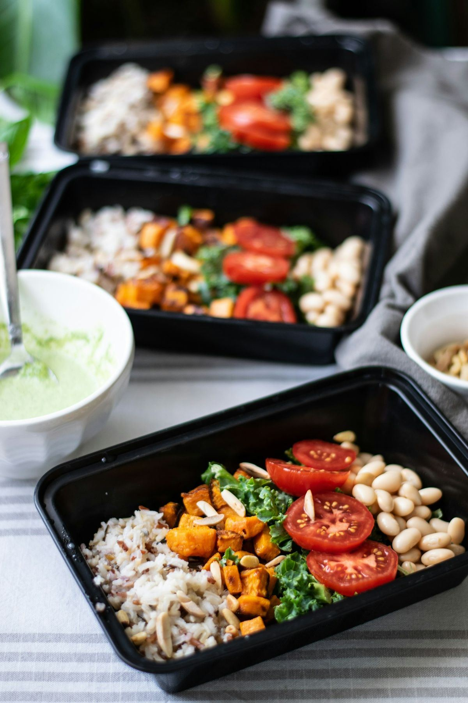

Meal ideas
Meal Prep Ideas for 12-Hour Shifts and Night Shift

This guide contains affiliate links. If you buy through them, Holistic Life may earn a small commission at no extra cost to you. How we use affiliate links.
Quick answer
- Pack one main meal, two snacks and water for each shift.
- Use a simple formula for batch cooking: a protein, a grain or starch and a vegetable.
- Keep cold food cold with an insulated bag and ice packs, and use the fridge if your unit has one.
- On days when cooking is not happening, a ready meal or kit can fill the gap.
Twelve hours is a long time to go without a good meal, and the break room vending machine is rarely the answer. Packing your own food helps you eat regularly and saves you from deciding at 3 a.m. This is a nurse-run page of meal prep ideas for nurses and other shift workers, built around simple prep you can really keep up.
What to pack for one shift
Think in four parts:
- One main meal. Something filling that you can eat in a short break.
- Two snacks. One for mid-shift, one for the tail end, or for the drive home. Snacks that need no fridge are listed further down.
- Water. A full bottle, plus a plan to refill it.
- Extras. A fork, a napkin and an ice pack, so you are never caught without.
Pack the same way each time. When the pack has a pattern, you stop having to decide. If you work nights, it can help to eat your main meal before work or early in the shift and keep the small hours to lighter food (see the night shift note below).
A simple batch-cooking formula
Pick one from each list, cook once on your day off, and portion into containers.
- A protein: chicken, turkey, eggs, tofu, beans, lentils or canned fish.
- A grain or starch: rice, pasta, potatoes, quinoa or whole-grain bread.
- A vegetable: roasted, steamed or raw, whichever you will actually eat.
Add a sauce or seasoning to change the flavor. Cook two proteins and two sides, and you can mix four different meals from one session. For dinner recipes that work well for batch cooking, see our high protein dinners.
Three example packs
Pack 1: Chicken and rice bowl. Sliced roasted chicken over rice with steamed broccoli. Snacks: a cheese stick with an apple, and a small bag of nuts.
Pack 2: Bean and egg burrito. A whole-grain tortilla filled with black beans, scrambled egg and salsa, wrapped in foil. Snacks: yogurt and a banana, and baby carrots with hummus.
Pack 3: Soup and a sandwich. A hearty lentil or chicken soup in an insulated jar, with a turkey and cheese sandwich. Snacks: trail mix and a clementine.
Options that need no microwave
Break room microwaves have a line. Skip it with food that is good cold or stays hot in a jar.
- Grain salads with beans and chopped vegetables
- Wraps and sandwiches
- Pasta salad
- Soup or stew packed hot in an insulated jar
- Egg muffins or hard-boiled eggs
Snacks that survive a locker
If your unit has no fridge, choose snacks that do not need cooling: nuts, seeds, whole fruit, nut butter packets, whole-grain crackers, jerky, roasted chickpeas and plain popcorn. Keep a small stash so you always have something.
Keeping food safe
Cooked food belongs in the fridge within 2 hours, according to the USDA, and leftovers are best eaten within 3 to 4 days. Reheat leftovers to 165°F. Chill cooked food thoroughly before packing it, and divide large batches into shallow containers so they chill faster.
For the shift itself, the USDA suggests a soft-sided insulated bag with at least two cold sources, such as two frozen gel packs placed on top and underneath the food. If your workplace has a fridge, store perishable food there as soon as you arrive, if your policy allows. Pack the bag right before you leave, even if the food was prepared the night before.
A note on eating during night shift
NIOSH, part of the CDC, has training material for nurses on shift work. Its diet suggestions for night shift include these points:
- Keep a regular day and night meal pattern, and cut back on eating between about midnight and 6 a.m.
- Snack when your energy drops, and choose foods like vegetables, fruit, yogurt, cheese, eggs and nuts.
- Go easy on sugary foods and low-fiber carbohydrate foods when you need to stay alert.
- Before sleeping, eat a small meal rather than a large one, and avoid heavy, greasy or spicy food close to bedtime.
These are general suggestions, and people differ. If you have a medical condition such as diabetes, ask your clinician or a dietitian what suits you.
Gear that makes it easier
A few good containers make the whole routine feel simpler.
Insulated lunch bag
A bag with real insulation keeps a full shift's food cold and keeps everything in one place.
What to look for
- Soft sides with a thick lining, and room for two containers plus snacks
- A wipe-clean inside
- A zipper that closes fully
See insulated lunch bags on Amazon (paid link)
Glass containers with locking lids
Glass goes in the microwave, does not stain and holds up to many washes, which is handy for batch cooking.
What to look for
- Locking lids with a good seal
- Microwave safe glass
- A mix of sizes, including a deeper one for a main meal
See glass containers on Amazon (paid link)
Insulated food jar
A wide-mouth jar keeps soup, stew or pasta hot for hours, with no microwave needed.
What to look for
- A wide mouth, so you can eat from it
- Stainless steel with vacuum insulation
- A lid that seals tightly
See insulated food jars on Amazon (paid link)
Slim ice packs
Cold food needs a cold source. Thin, flat packs fit along the top and bottom of a bag without taking up room.
What to look for
- Slim and flat, so they stack
- A tough shell that will not split
- Sold in sets of two or more, so one can be in the freezer
See ice packs on Amazon (paid link)
Leakproof water bottle
Drinking water is easy to forget on a busy unit. A bottle that does not leak can live in your bag.
What to look for
- A locking or screw lid
- A size that fits a bag side pocket
- Easy to clean, with a wide opening
See leakproof bottles on Amazon (paid link)
When cooking is not happening
After a run of long shifts, nobody wants to cook. That is when a ready meal or a kit can fill the gap.
- Factor delivers fully prepared meals that you heat up. Pros: nothing to cook or chop, and it works for a tired brain. Cons: you need a fridge and a microwave or oven, and it costs more than cooking at home, so many people keep it for the toughest weeks.
- Home Chef sends ingredients and recipes for you to cook. Pros: no planning or grocery trip, and you still cook, which suits people who enjoy it. Cons: you still need about 30 minutes and the energy to cook.
Neither replaces a pantry of simple staples, but both are a handy backup. For a gift idea for the nurse in your life, see our gifts for nurses or our meal prep gifts.
Frequently asked questions
How long can I keep prepped meals?
The USDA says leftovers are best eaten within 3 to 4 days in the fridge. For a longer stretch, freeze portions and thaw them in the fridge the night before.
Can I keep my lunch in the unit fridge?
Check your unit's policy first, because rules vary. If you can use a fridge, put your food in it as soon as you arrive. Otherwise use an insulated bag with two cold sources.
Sources
Save this guide for later
Tap a pin to save it to your Pinterest boards.